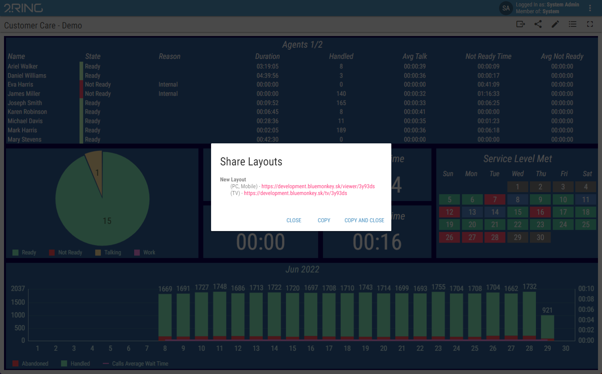

Using Short URLs¶
Short URLs are used to easily access a specific Layout. The Short URL is especially useful on devices, that make it hard or even impossible to enter the URL.
When viewing a Layout, clicking the (share button), located on the top-right side displays a dialog containing the Short URL for both the TV and PC/Mobile devices.
Figure 1: Share Layout dialog
Each Layout contains a Short URL, which is automatically generated once the Layout is created. Furthermore, the Layout accessed through Short URL, can be configured to allow anonymous access. When navigating to such Layout, no login is required.
The properties of Short URL, such as anonymous access can be configured in the Short URL group of the Layout panel, which is described in more detail in Editing a Layout chapter.